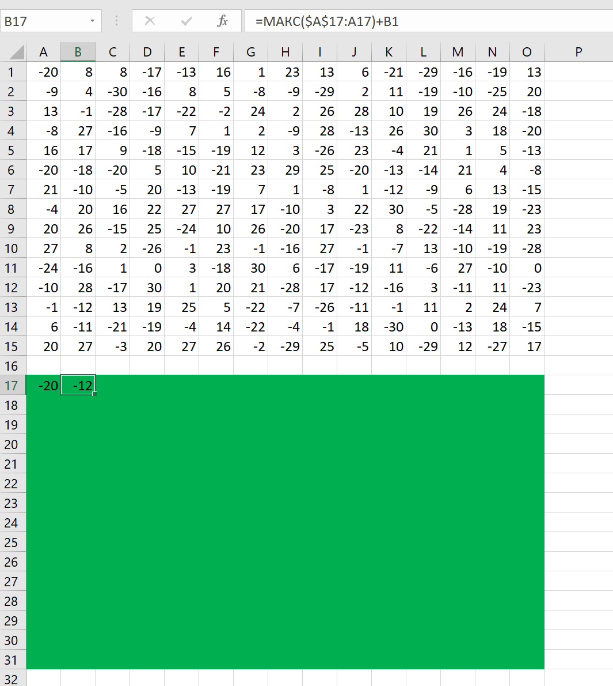

Задание №1
| Квадрат разлинован на N×N клеток (1 < N < 17). Исполнитель Робот может перемещаться по клеткам, выполняя за одно перемещение одну из двух команд: вправо или вниз. По команде вправо Робот перемещается в соседнюю правую клетку, по команде вниз — в соседнюю нижнюю. При попытке выхода за границу квадрата Робот разрушается. Перед каждым запуском Робота в каждой клетке квадрата лежит монета достоинством от 1 до 100. Посетив клетку, Робот забирает монету с собой; это также относится к начальной и конечной клетке маршрута Робота. Откройте файл. Определите максимальную и минимальную денежную сумму, которую может собрать Робот, пройдя из левой верхней клетки в правую нижнюю. В ответ запишите два числа друг за другом без разделительных знаков — сначала максимальную сумму, затем минимальную. Исходные данные представляют собой электронную таблицу размером N×N, каждая ячейка которой соответствует клетке квадрата. |
Скачать файл
Решение:
- Для начала посмотрим на Excel документ, мы видим числовую таблицу. Для решения подобной задачи необходимо скопировать эту самую таблицу на несколько ячеек ниже, залить всё цветом, а потом удалить все числовые значения в этой скопированной таблице.
В результате должен получиться подобный макет.

- По условию задачи, мы должны идти с верхнего левого края к правому нижнему. наносим стартовое значение на макет.
- Теперь нужно в правую ячейку написать сумму стартового числа и числа, которое находится справа от стартового числа на оригинальной таблице. При этом важно в команде брать стартовое число с макета, а правое с оригинала.
теперь копируем эту формулу и растягиваем до правого края макета.
В результате получится сумма ряда чисел от начала до правого края.
- Теперь то же самое нужно сделать и с нижними значениями.
- В вопросе задачи видим, что нам нужно найти максимальное и минимальное значение денежной суммы. Для этого на диагональной ячейке прописываем эту команду.
Далее копируем эту команду и вставляем ее на весь оставшийся макет.
Наш первый ответ - это нижнее крайне правое число. Эта позиция и является нашим финишем по условию задачи.
- Чтобы найти минимальное число, нам нужно всего лишь заменить команду МАКС на МИН и не забыть заново растянуть новую команду на весь макет.
Наш второй ответ находится так же в правой нижней ячейке. Записываем ответ.
Ответ: 1204 502
Задание №2
| Дана последовательность вещественных чисел. Из неё необходимо выбрать несколько подряд идущих чисел так, чтобы каждое следующее число было меньше предыдущего. Какую максимальную сумму могут иметь выбранные числа? В ответе запишите только целую часть максимально возможной суммы. Исходная последовательность записана в виде одного столбца электронной таблицы. |
Скачать файл
Решение:
- Открываем файл и переносим самое первое число в ячейку B1.
- По условию задачи, нужно найти такой ряд чисел, в котором каждое последующее число меньше предыдущего. Пишем соответствующую команду ЕСЛИ.
- Далее растягиваем эту команду на весь ряд
Теперь нужно найти наибольшее число из нового ряда. Делаем это с помощью команды МАКС.
Получилось число 358,76. В ответ записываем только целую часть.
Ответ: 358
Задание №3
| Дана последовательность вещественных чисел. Из неё необходимо выбрать несколько подряд идущих чисел так, чтобы каждое следующее число отличалось от предыдущего не более чем на 10. Какую максимальную сумму могут иметь выбранные числа? В ответе запишите только целую часть максимально возможной суммы. Исходная последовательность записана в виде одного столбца электронной таблицы. |
Скачать файл
Решение:
- Открываем файл и переносим самое первое число в ячейку B1.
- По условию задачи, нужно найти такой ряд чисел, в котором каждое последующее число отличается от предыдущего не более чем на 10. Нам не сказано, какое число должно быть больше, поэтому используем команду модуля ABS. Также нам нужно учитывать то, что в таблице присутствуют отрицательные числа, которые будут мешать найти максимальную сумму, поэтому их не нужно учитывать. Пишем соответствующую команду ЕСЛИ.
- Далее растягиваем эту команду на весь ряд
Теперь нужно найти наибольшее число из нового ряда. Делаем это с помощью команды МАКС.
Получилось число 80,76. В ответ записываем только целую часть.
Ответ: 80
Задание №4
| Дан квадрат 15 × 15 клеток, в каждой клетке которого записано целое число. В левом верхнем углу квадрата стоит ладья. За один ход ладья может переместиться в пределах квадрата на любое количество клеток вправо или вниз (влево и вверх ладья ходить не может). Необходимо переместить ладью в правый нижний угол так, чтобы сумма чисел в клетках, в которых ладья останавливалась (включая начальную и конечную), была максимальной. В ответе запишите максимально возможную сумму. |
Скачать файл
Решение:
- Делаем макет таблицы. Ладья в начальной позиции находится в верхнем левом углу, так что копируем ячейку A1 в A17.

- В отличии от самой первой задачи, ладья может ходить на сколько угодно клеток, а не на одну, поэтому надо будет использовать другую команду. Знак $ означает то, что при растягивании формулы эта ячейка не будет меняться. Нам нужно найти максимальное число, поэтому в формуле используем команду МАКС.

Растягиваем до конца.
- Теперь делаем то же самое, но с нижними ячейками от начальной ячейки макета.
- Далее в ячейку B18 надо вписать команду МАКС, которая должна выбрать максимально число по столбцам и по строкам. Для этого надо записать подобную команду.
Теперь растягиваем ее до конца таблицы
В правой нижней ячейке получилось число 323, записываем ответ.
Ответ: 323
Назад |